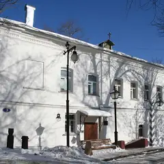
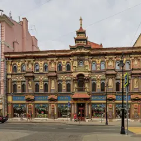
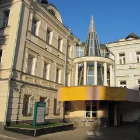

Бар · ЦАО
Fonoteca
Listening-бар в цоколе ресторана: музыку ставит селектор, обслуживает только бармен. Атмосферно для вечера вдвоём.
- ₽₽ · 1 500–3 000 ₽ на человека
- Новое в каталоге
- в 2 планах
Позвать сюда: FonotecaОткрыть в каталоге: FonotecaМаршрут до места: Fonoteca
Адрес и детали
- Адрес
- Кривоколенный пер., 7
Открыть на Яндекс Картах (в новой вкладке) - Метро
- м. Чистые пруды
- Округ
- Центр (ЦАО)
- Цена
- 1 500–3 000 ₽ на человека
- Проверено
- работает — проверили в ноябре 2026
Планы с этим местом 2

- Музей «Огни Москвы» · Музей · м. Лубянка
- 3 минуты пешкомFonoteca · Бар
Музей старинного городского освещения в палатах XVII века, а потом пара минут по переулку в бар, где селектор ставит пластинки и можно спокойно поговорить.
Открыть план: Огни Москвы и винилПозвать сюда: Огни Москвы и винил
Фото: Николай Аввакумов, CC BY 3.0 · Wikimedia Commons
- Клаустрофобия · Квест · м. Чистые пруды
- 6 минут пешкомFonoteca · Бар
Час на квест в Клаустрофобии, потом пять минут пешком в Fonoteca: обсудить, кто подвёл команду, под хорошую музыку и коктейли.
Открыть план: Квест и пластинкиПозвать сюда: Квест и пластинки
Похожие рядом

Что ещё рядом
- Музей «Огни Москвы»Музей · ≈ 3 минуты пешком

Чайный дом на МясницкойЧайный магазин в «китайском» доме · ≈ 3 минуты пешком- ZoeПекарня · ≈ 4 минуты пешком
- Et CeteraТеатр · ≈ 5 минут пешком

Библиотека-читальня им. ТургеневаБиблиотека · ≈ 6 минут пешком- КлаустрофобияКвест · ≈ 6 минут пешком
Как позвать
- Выбери план, место или событие — в карточке адрес, цены и маршрут в Яндекс Картах.
- Нажми «Позвать сюда» — соберётся приглашение-игра для свидания или голосование для компании.
- Отправь ссылку в любой мессенджер: тебе ответят, а компания отметит, куда и когда может. Бесплатно и без регистрации.